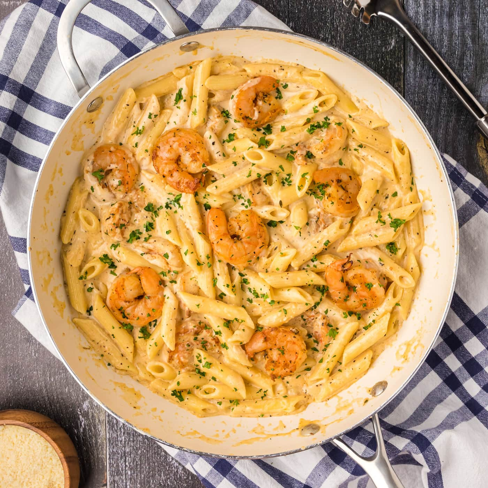

Home
Cajun Shrimp Pasta Recipe

Description
This creamy cajun shrimp pasta is bursting at the seams with a rich parmesan cream sauce,
tender noodles, and juicy shrimp sprinkled with homemade cajun seasoning.
We’ve found the perfect balance between creaminess and spice in this cajun shrimp pasta recipe.
Each bite brings forth the comforting warmth of bold cajun seasoning,
creamy parmesan sauce, and tender shrimp in a bed of penne pasta.
Honestly, what more could you ask for in a shrimp pasta dish?
Steps
- Cook pasta according to package directions. Drain and set aside.
- Meanwhile, in a large bowl, toss the shrimp with half of the Cajun seasoning
and 2 tablespoons of the olive oil.
- Place remaining olive oil into a large deep sided skillet and
warm over medium-high heat until shimmering.
- Place remaining olive oil into a large deep sided skillet and
warm over medium-high heat until shimmering.
- Add the heavy cream to the remaining oil and seasonings in the pan.
Whisk in garlic salt (to taste), remaining Cajun seasoning, and black pepper (to taste).
- Sprinkle in the grated parmesan cheese and heat through until cheese has melted.
Bring sauce to a gentle boil.
- To thicken the sauce, make a slurry from the cornstarch and water. Whisk the slurry into the sauce in the skillet.
Cook an additional 2-4 minutes to thicken.
- Add cooked pasta and shrimp to the skillet and stir to coat.
Enjoy!